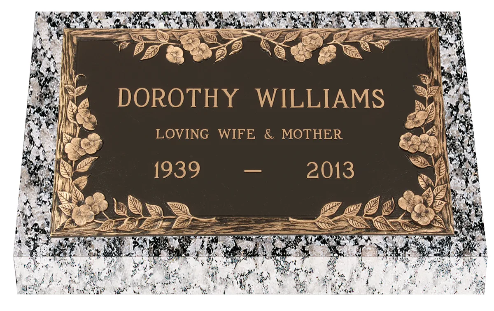
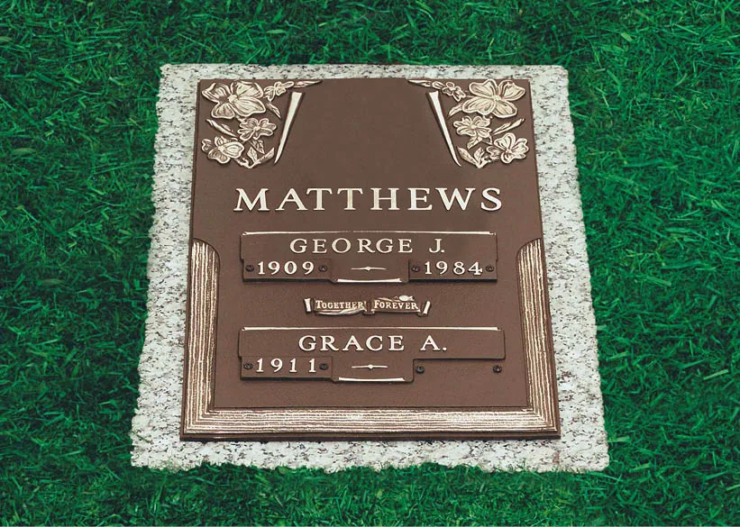
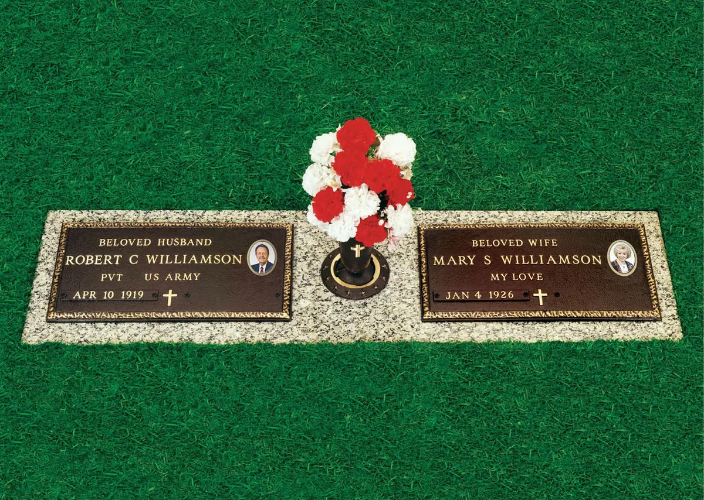
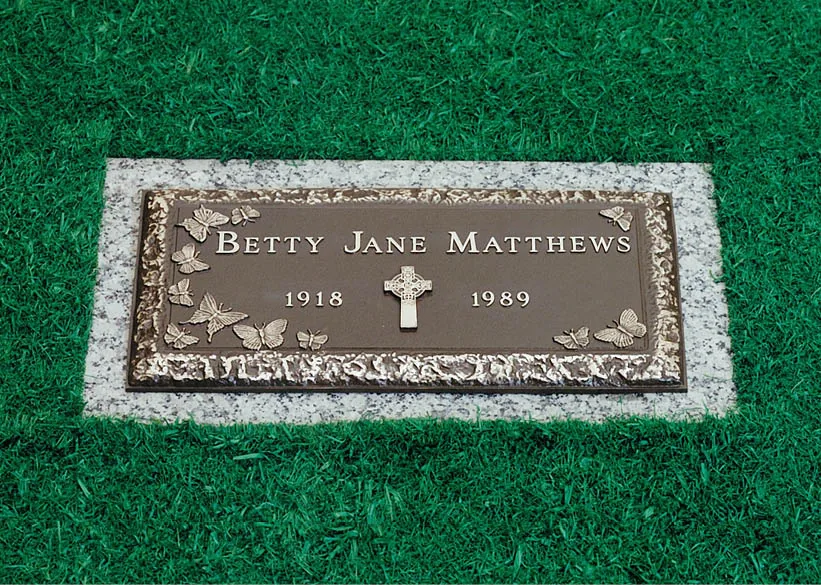
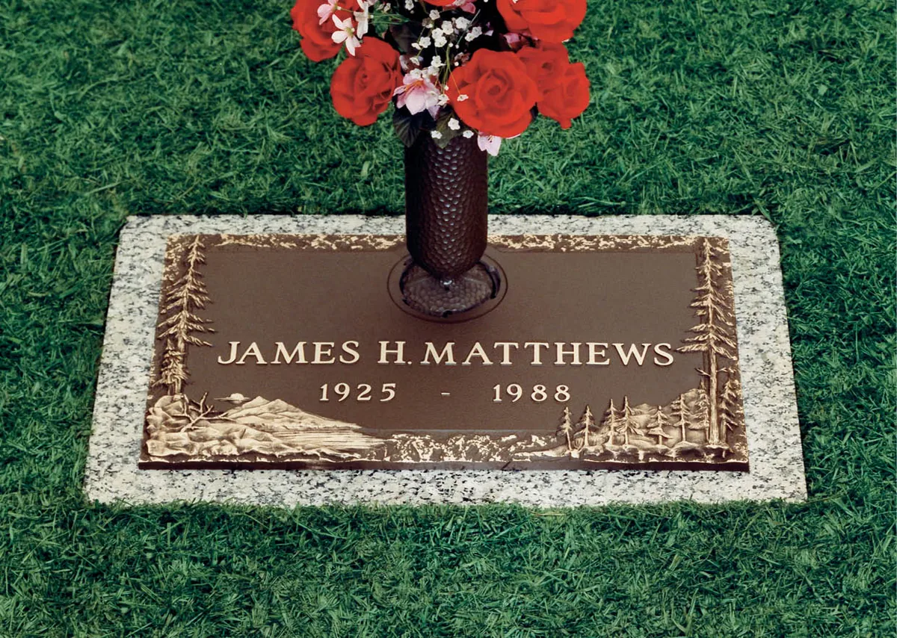

Bronze Marker Guide
Bronze Never Sits On Bare Lawn
Every bronze marker at Washington Memorial Park is mounted on a granite or concrete foundation that is a few inches larger than the bronze on every side. That base is what keeps the marker level as the ground settles, and it is what the mowers ride on.
The base is not an extra you decide on later. It is part of the marker and it is part of every price in this guide.
Most of our granite bases are Barrell Gray. Nearly all sections here require flush markers only, in bronze or granite.
About Bronze Markers

Granite or Bronze
Both materials will outlast all of us, so the difference is what you can do with them. Granite gives you over twenty stone colors, ceramic photo portraits, diamond etching and carved scenes, and the marker is its own foundation. Bronze gives you the traditional cast look, the government match, emblems and vases cast into the metal, and the sculpted artwork of Expressions in Bronze, and it always sits on a granite or concrete base. Most families here choose granite for the personalization. If you want the bronze look, or you are matching a government marker already on the grave, bronze is the right answer and it is not a compromise.
Granite or Bronze
This is the question almost every family asks me, so here is the honest answer. Both materials will outlast all of us. The difference is what you can do with them.
Granite
- Over twenty stone colors in three price groups
- Ceramic photo portraits in full color
- Hand diamond etching and laser etching
- Carved scenes, emblems and custom artwork
- The marker is its own foundation, so there is no separate base
Bronze
- The traditional cast look, in one bronze finish
- The only material the government match comes in
- Emblems, borders and vases cast into the metal
- Sculpted custom artwork through Expressions in Bronze
- Always mounted on a granite or concrete base
If personalization matters most to you, granite gives you more room to work with, and that is why most families here choose it. If you want the traditional bronze look, or you are matching a government marker that is already on the grave, bronze is the right answer and it is not a compromise.
Buying a marker from somewhere other than Bonney Watson is allowed, and there are extra charges when you do. Those are set out in the Outside Marker Rules & Pricing guide.
What Fits On Your Grave
What you can put on a grave depends on how many interment rights that grave carries and whether the marker spans one grave or two. These are the park's rules, and they are the same for everyone. Every measurement below is inches, marker first and then the base it is mounted on.
on 28×16
on 28×18
on 32×20 granite
One grave with one interment right. A 24×12 government bronze on a 28×16 granite or concrete base. In Vets and Vets North a 24×12 on a concrete base is the standard. Otherwise you can take a 24×14 single on a 28×18 Barrell Gray base, a 28×16 single on a concrete base unless you upgrade it to a 32×20, or a 32×72 single ledger on a 36×76 Barrell Gray base.
One grave with two interment rights. Two people in one grave, so there are more ways to do it. A 24×12 government bronze on a 28×16 Barrell Gray base at the head with the same again in the center. Two 24×12 government bronzes on one 28×38 Barrell Gray base. A 28×16 bronze companion on a concrete base. A 24×30 bronze companion, which is the half ledger in the price section, on a 28×34 Barrell Gray base. A 32×72 companion ledger on a 36×76 Barrell Gray base. Or a 16×8 or 18×10 second-right marker, which is only ever placed below the primary headstone.
One marker across two graves. Both spaces have to be paid in full first. A 44×14 bronze on a 48×18 Barrell Gray base, a 56×16 bronze on a 64×20 Barrell Gray base, or a 32×72 companion full ledger on a 36×76 Barrell Gray base. Two 24×12 government bronzes can also share one base: a 60×16 Barrell Gray with no vase, or a 64×20 Barrell Gray with a 6″ vase hole.
Two more rules worth knowing. Markers in the Lake Urn Garden are 15×10 singles, except for the Williamsburg companion blocks that are already in place. The infant sections take an 18×10, and those are granite only, so there is no bronze option there.

The Government Bronze Match

The VA gives every eligible veteran a bronze marker at no charge. It is 24″ by 12″, it has a set layout, and it only ever names the veteran. Washington Memorial Park does not charge for the marker, but it does have to sit on a foundation like any other bronze here, and somebody has to set it.
So there are two things families come to me for.
The VA sends the marker and we install it. You apply to the VA, they ship the bronze, and we pour the base and set it. That is $1,308.24 with tax.
The husband or wife wants a marker that matches. The VA will not supply a second one, so we order a matching government-style 24×12 bronze through Coldspring, cast to the same size and the same layout, and mount it on a granite or concrete base beside the first. That is $3,521.76 with tax, and that figure covers the bronze, the base, the installation and the sales tax.
Side by side they read as a pair, which is the whole point. There are also several veteran combinations on one or two spaces, with or without a vase, and those are in the first group of prices in Section 5.
Bronze Marker Pricing
Every figure below is the marker, the foundation under it, the installation and Washington sales tax of 10.4%, all together. It is the number you would actually pay. Standard wording and up to three emblems are part of the casting. Extra words, extra emblems and lettering in another alphabet carry their own fees, and I will price those exactly when we design yours.Every figure below covers the marker, the foundation under it, the installation and Washington sales tax of 10.4%, all together. It is the number you would actually pay.
Where a particular one falls in that range depends on the size, the location and the options you choose. I would rather give you a real number than a guess. Call or email me and I will put an exact quote in writing for you, with no obligation.
| Marker | All-in price, tax included |
|---|---|
| Government bronze, match24×12 on a granite or concrete base | $3,521.76 |
| Installation onlyGovernment bronze supplied by the VA | $1,308.24 |
| VA match, 1 space, no vase | $4,112.40 |
| VA match, 1 space, with vase core | $4,791.36 |
| VA match, 2 spaces, no vase | $4,427.04 |
| VA match, 2 spaces, with vase core | $4,929.36 |
| VA match, 1 space, two bronzes, no vase | $4,747.20 |
Singles and companions below are the standard Matthews and Coldspring castings. A vase core is the fitting that lets a vase screw into the marker, and it is priced with the marker. The vase itself is separate: the bronze vases run about $1,480 to $1,595 with tax, and there is a simple gray zinc vase at about $226.
Where a particular one falls in that range depends on the size, the location and the options you choose. I would rather give you a real number than a guess. Call or email me and I will put an exact quote in writing for you, with no obligation.
| Marker | All-in price, tax included |
|---|---|
| Single 24×14No vase, on a 28×18 base | $4,531.92 |
| Single 28×16, concrete baseNo vase | $4,228.32 |
| Single 28×16, granite baseNo vase | $5,321.28 |
| Companion 44×14, no vase | $8,440.08 |
| Companion 44×14, with vase core | $8,677.44 |
| Companion 56×16, no vase | $10,598.40 |
| Companion 56×16, with vase core | $10,769.52 |
| Companion 60×20, no vase | $13,595.76 |
| Companion 60×20, with vase core | $13,772.40 |
| Half ledger, no vase core24×30 on a 28×34 base | $7,203.60 |
| Half ledger, with vase core24×30 on a 28×34 base | $7,485.12 |
| Full ledger, no vase core | $27,666.24 |
| Full ledger, with vase core | $27,842.88 |
The last group covers the urn gardens, the lawn crypts and a second name added to a grave that already has a marker on it.
Where a particular one falls in that range depends on the size, the location and the options you choose. I would rather give you a real number than a guess. Call or email me and I will put an exact quote in writing for you, with no obligation.
| Marker | All-in price, tax included |
|---|---|
| Bronze single, Gasser OldsLake Urn Garden | $2,997.36 |
| Lake Urn Garden memorial | $3,212.64 |
| Cremorial unitRose, Lake and Vets urn gardens | $6,259.68 |
| Second right memorial16×8 or 18×10, below the primary headstone | $2,368.08 |
| Lawn crypt, no vase | $4,725.12 |
| Lawn crypt, with vase core | $5,282.64 |

Expressions in Bronze

Expressions in Bronze is Matthews' personalized line. Instead of choosing an emblem from a book, an artist sculpts your artwork and it is cast into the marker: a lake, a stand of trees, a boat, an instrument, whatever the person was known for. Because it is sculpted rather than applied, it has real depth to it, and it ages exactly the way the rest of the marker does.
It takes longer than a standard casting and it costs more, and I would rather you know both of those things up front. If you want to see what is possible, tell me what you have in mind and I will bring you proofs before anything is ordered.
Where a particular one falls in that range depends on the size, the location and the options you choose. I would rather give you a real number than a guess. Call or email me and I will put an exact quote in writing for you, with no obligation.
| Marker | All-in price, tax included |
|---|---|
| Single 24×14, no vase | $7,242.24 |
| Single 24×14, with vase core | $7,413.36 |
| Single 28×16, no vase | $7,915.68 |
| Single 28×16, concrete base, no vase | $6,822.72 |
| Companion 44×14, no vase | $11,100.72 |
| Companion 44×14, with vase core | $11,343.60 |
| Companion 56×16, no vase | $12,337.20 |
| Companion 56×16, with vase core | $12,508.32 |
Prices include the bronze, the foundation, the installation and Washington sales tax of 10.4%. Prices are subject to change without notice, and I will confirm today's figure in writing before you sign anything.
Tell me which grave and I will price it exactly
What fits depends on the grave and on how many interment rights it carries, so the fastest way to get a real number is to tell me the space. I will confirm the size that is allowed, the base it needs and the full price with tax, in writing, with no obligation.
Martice Morrison · (206) 445-9794 · mmorrison@bonneywatson.com